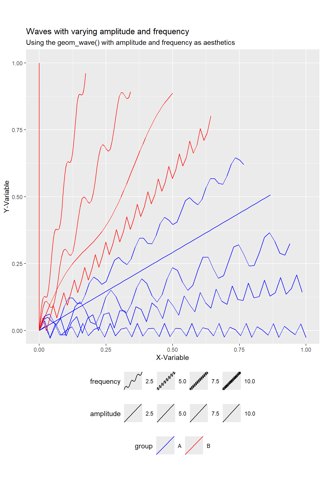
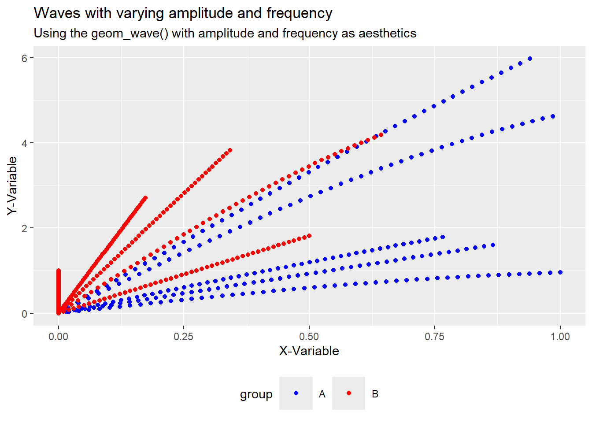

There are no exercises in this chapter. Instead, I use the code and teachings of this chapter to make a custom ggplot2 extension.
Creating a new ggplot2 extension: geom_wave()
The provided code defines a ggplot2 extension which allows users to create wave-like geoms. These set of functions and geoms to create and customize wave patterns. The main functions are:
geom_wave(): Creates a wave geom.
stat_wave(): Computes wave paths for a given dataset.
scale_amplitude_continuous() and scale_frequency_continuous(): Scales for amplitude and frequency of the drawn waves.
The complete code: —
Code
# Loading libarieslibrary(tidyverse)library(scales)library(grid)library(gt)# Defining a wave creating functioncreate_wave<-function(x,y,xend,yend,amplitude=1,frequency=1,n=5000){# Validate the input argumentsif(amplitude<0){rlang::abort("`amplitude` must be non-negative.")}if(frequency<=0){rlang::abort("`frequency` must be larger than zero.")}if(n==0){rlang::abort("`n` must be greater than zero.")}# Calculate the direct length of the wave pathlength<-sqrt((x-xend)^2+(y-yend)^2)# Calculate the number of points we needn_points<-n# Calculate the sequence of x and y offset valuesx_seq<-seq(x, xend, length.out =n_points)y_seq<-seq(y, yend, length.out =n_points)# Create and return the transformed data framedata.frame( x =x_seq, y =y_seq+sin((x_seq-x)*frequency/(length*pi*2))*amplitude)}# A wave GrobwaveGrob<-function(x0=unit(0, "npc"),y0=unit(0, "npc"),x1=unit(1, "npc"),y1=unit(1, "npc"),amplitude=unit(0.1, "npc"),frequency=1,n=5000,default.units="npc",name=NULL,gp=gpar(),vp=NULL){# Use the default unit if the user does not specify oneif(!is.unit(x0))x0<-unit(x0, default.units)if(!is.unit(x1))x1<-unit(x1, default.units)if(!is.unit(y0))y0<-unit(y0, default.units)if(!is.unit(y1))y1<-unit(y1, default.units)if(!is.unit(amplitude))amplitude<-unit(amplitude, default.units)# Return a gTree of class "wave"gTree( x0 =x0, y0 =y0, x1 =x1, y1 =y1, amplitude =amplitude, frequency =frequency, n =n, name =name, gp =gp, vp =vp, cl ="wave")}makeContent.wave<-function(x){# Convert position and amplitude values to absolute unitsx0<-convertX(x$x0, "mm", valueOnly =TRUE)x1<-convertX(x$x1, "mm", valueOnly =TRUE)y0<-convertY(x$y0, "mm", valueOnly =TRUE)y1<-convertY(x$y1, "mm", valueOnly =TRUE)amplitude<-convertWidth(x$amplitude, "mm", valueOnly =TRUE)# Leave frequency and n untouchedfrequency<-x$frequencyn<-x$n# Transform the input data to a data frame containing wave pathswaves<-lapply(seq_along(x0), function(i){cbind(create_wave( x =x0[i], y =y0[i], xend =x1[i], yend =y1[i], amplitude =amplitude[i], frequency =frequency[i], n =n), id =i)})waves<-do.call(rbind, waves)# Construct the grobwave_paths<-polylineGrob( x =waves$x, y =waves$y, id =waves$id, default.units ="mm", gp =x$gp)setChildren(x, gList(wave_paths))}# The GeomWaveGeomWave<-ggproto("GeomWave", Geom,# Check that the user has specified sensible parameters setup_params =function(data, params){if(is.null(params$n)){params$n<-50}elseif(params$n<=0){rlang::abort("Waves must be defined with `n` greater than 0")}params},# Check input data and return grobs draw_panel =function(data,panel_params,coord,n=50,lineend="butt",na.rm=FALSE){# Remove missing data, returning early if all are missingdata<-remove_missing( df =data, na.rm =na.rm, vars =c("x", "y", "xend", "yend", "linetype", "linewidth"), name ="geom_wave")if(is.null(data)||nrow(data)==0){return(zeroGrob())}# Supply the coordinate system for the plotif(!coord$is_linear()){rlang::warn("Wave geom only works correctly on linear coordinate systems")}coord<-coord$transform(data, panel_params)# Construct the grobwaveGrob(coord$x,coord$y,coord$xend,coord$yend, default.units ="native", amplitude =unit(coord$amplitude, "cm"), frequency =coord$frequency, n =n, gp =gpar( col =alpha(coord$colour, coord$alpha), lwd =coord$linewidth*.pt, lty =coord$linetype, lineend =lineend))},# Specify the default and required aesthetics required_aes =c("x", "y", "xend", "yend"), default_aes =aes( colour ="black", linewidth =0.5, linetype =1L, alpha =NA, amplitude =0.1, frequency =1))# Constructor wrapper function around WaveGrobgeom_wave<-function(mapping=NULL,data=NULL,stat="identity",position="identity",...,n=50,lineend="butt",na.rm=FALSE,show.legend=NA,inherit.aes=TRUE){layer( data =data, mapping =mapping, stat =stat, geom =GeomWave, position =position, show.legend =show.legend, inherit.aes =inherit.aes, params =list( n =n, lineend =lineend, na.rm =na.rm,...))}# And the stat_* constructor function# The StatWaveStatWave<-ggproto("StatWave", Stat, setup_data =function(data, params){if(anyDuplicated(data$group)){data$group<-paste(data$group, seq_len(nrow(data)), sep ="-")}data}, compute_panel =function(data, scales, n=50){cols_to_keep<-setdiff(names(data), c("x", "y", "xend", "yend"))waves<-lapply(seq_len(nrow(data)), function(i){wave_path<-create_wave(data$x[i],data$y[i],data$xend[i],data$yend[i],data$amplitude[i],data$frequency[i],n)cbind(wave_path, unclass(data[i, cols_to_keep]))})do.call(rbind, waves)}, required_aes =c("x", "y", "xend", "yend"), optional_aes =c("amplitude", "frequency"))# Constructor wrapper function around StatWavestat_wave<-function(mapping=NULL,data=NULL,geom="wave",position="identity",...,n=50,na.rm=FALSE,show.legend=NA,inherit.aes=TRUE){layer( data =data, mapping =mapping, stat =StatWave, geom =geom, position =position, show.legend =show.legend, inherit.aes =inherit.aes, params =list( n =n, na.rm =na.rm,...))}# Scalesscale_amplitude_continuous<-function(..., range=c(0.05, 0.2)){continuous_scale( aesthetics ="amplitude", scale_name ="amplitude_c", palette =scales::rescale_pal(range),...)}scale_amplitude<-scale_amplitude_continuousscale_amplitude_discrete<-function(...){rlang::abort("Amplitude cannot be used with discrete data")}scale_frequency_continuous<-function(...,range=c(1, 5),unit="cm"){continuous_scale( aesthetics ="frequency", scale_name ="frequency_c", palette =scales::rescale_pal(range),...)}scale_frequency<-scale_frequency_continuousscale_frequency_discrete<-function(...){rlang::abort("Frequency cannot be used with discrete data")}draw_key_wave<-function(data, params, size){waveGrob( x0 =0, y0 =0, x1 =1, y1 =1, amplitude =unit(data$amplitude, "cm"), frequency =data$frequency, gp =gpar( col =alpha(data$colour%||%"black", data$alpha), lwd =(data$size%||%0.5)*.pt, lty =data$linetype%||%1), vp =viewport(clip ="on"))}GeomWave$draw_key<-draw_key_wave
Step 1
First, a function named create_wave is defined to generate a wave-like path between two points (x, y) and (xend, yend) on a plot. The wave’s characteristics, such as amplitude, frequency, and number of points (n), are taken as input, and validation checks are performed on the parameters. The output is a data frame with transformed x and y coordinates, where the sine function is applied to create the wave effect.
# Defining a wave creating functioncreate_wave<-function(x,y,xend,yend,amplitude=1,frequency=1,n=500){# Validate the input argumentsif(amplitude<0){rlang::abort("`amplitude` must be non-negative.")}if(frequency<=0){rlang::abort("`frequency` must be larger than zero.")}if(n==0){rlang::abort("`n` must be greater than zero.")}# Calculate the direct length of the wave pathlength<-sqrt((x-xend)^2+(y-yend)^2)# Calculate the number of points we needn_points<-n# Calculate the sequence of x and y offset valuesx_seq<-seq(x, xend, length.out =n_points)y_seq<-seq(y, yend, length.out =n_points)# Create and return the transformed data framedata.frame( x =x_seq, y =y_seq+sin((x_seq-x)*frequency/(length*pi*2))*amplitude)}
Step 2
A function waveGrob is defined to create a graphical object (grob) representing a wave between two coordinates (x0, y0 and x1, y1) using grid graphics. Various parameters such as amplitude, frequency, and number of points are included, with default units being set to “npc” (normalized parent coordinates) if not specified. The function returns a gTree object, which is assigned the class “wave”.
# A wave GrobwaveGrob<-function(x0=unit(0, "npc"),y0=unit(0, "npc"),x1=unit(1, "npc"),y1=unit(1, "npc"),amplitude=unit(0.1, "npc"),frequency=1,n=500,default.units="npc",name=NULL,gp=gpar(),vp=NULL){# Use the default unit if the user does not specify oneif(!is.unit(x0))x0<-unit(x0, default.units)if(!is.unit(x1))x1<-unit(x1, default.units)if(!is.unit(y0))y0<-unit(y0, default.units)if(!is.unit(y1))y1<-unit(y1, default.units)if(!is.unit(amplitude))amplitude<-unit(amplitude, default.units)# Return a gTree of class "wave"gTree( x0 =x0, y0 =y0, x1 =x1, y1 =y1, amplitude =amplitude, frequency =frequency, n =n, name =name, gp =gp, vp =vp, cl ="wave")}
Step 3
The function makeContent.wave is designed to generate the graphical content for a “wave” grob (graphical object) by converting positions (x0, y0, x1, y1) and amplitude to absolute units (in millimeters). A wave path is created for each segment using the previously defined create_wave function. The results are combined and passed to polylineGrob to create the wave paths, which are then set as children of the original grob object using setChildren.
makeContent.wave<-function(x){# Convert position and amplitude values to absolute unitsx0<-convertX(x$x0, "mm", valueOnly =TRUE)x1<-convertX(x$x1, "mm", valueOnly =TRUE)y0<-convertY(x$y0, "mm", valueOnly =TRUE)y1<-convertY(x$y1, "mm", valueOnly =TRUE)amplitude<-convertWidth(x$amplitude, "mm", valueOnly =TRUE)# Leave frequency and n untouchedfrequency<-x$frequencyn<-x$n# Transform the input data to a data frame containing wave pathswaves<-lapply(seq_along(x0), function(i){cbind(create_wave( x =x0[i], y =y0[i], xend =x1[i], yend =y1[i], amplitude =amplitude[i], frequency =frequency[i], n =n), id =i)})waves<-do.call(rbind, waves)# Construct the grobwave_paths<-polylineGrob( x =waves$x, y =waves$y, id =waves$id, default.units ="mm", gp =x$gp)setChildren(x, gList(wave_paths))}
Step 4
The GeomWave is defined as a ggproto object that extends ggplot2 to create wave-like geometries. It validates parameters through setup_params, ensuring that n (number of points) is greater than zero. In the draw_panel function, missing data is removed, and the coordinate system is transformed before constructing the wave grob using waveGrob. The constructor function geom_wave wraps this geometry into a convenient layer for use in ggplot2, with default aesthetics like color, amplitude, and frequency provided.
# The GeomWaveGeomWave<-ggproto("GeomWave", Geom,# Check that the user has specified sensible parameters setup_params =function(data, params){if(is.null(params$n)){params$n<-50}elseif(params$n<=0){rlang::abort("Waves must be defined with `n` greater than 0")}params},# Check input data and return grobs draw_panel =function(data,panel_params,coord,n=50,lineend="butt",na.rm=FALSE){# Remove missing data, returning early if all are missingdata<-remove_missing( df =data, na.rm =na.rm, vars =c("x", "y", "xend", "yend", "linetype", "linewidth"), name ="geom_wave")if(is.null(data)||nrow(data)==0){return(zeroGrob())}# Supply the coordinate system for the plotif(!coord$is_linear()){rlang::warn("Wave geom only works correctly on linear coordinate systems")}coord<-coord$transform(data, panel_params)# Construct the grobwaveGrob(coord$x,coord$y,coord$xend,coord$yend, default.units ="native", amplitude =unit(coord$amplitude, "cm"), frequency =coord$frequency, n =n, gp =gpar( col =alpha(coord$colour, coord$alpha), lwd =coord$linewidth*.pt, lty =coord$linetype, lineend =lineend))},# Specify the default and required aesthetics required_aes =c("x", "y", "xend", "yend"), default_aes =aes( colour ="black", linewidth =0.5, linetype =1L, alpha =NA, amplitude =0.1, frequency =1))# Constructor wrapper function around WaveGrobgeom_wave<-function(mapping=NULL,data=NULL,stat="identity",position="identity",...,n=50,lineend="butt",na.rm=FALSE,show.legend=NA,inherit.aes=TRUE){layer( data =data, mapping =mapping, stat =stat, geom =GeomWave, position =position, show.legend =show.legend, inherit.aes =inherit.aes, params =list( n =n, lineend =lineend, na.rm =na.rm,...))}
Step 5
The StatWave is defined as a ggproto object to compute the wave paths for each row of data in the ggplot2 layer. In the setup_data function, groups are ensured to be unique by appending row numbers, while the compute_panel function generates the wave path using the create_wave function for each data point. The stat_wave constructor function provides a wrapper around StatWave for use in ggplot2, allowing wave geometries to be added as a statistical transformation, with options for amplitude, frequency, and the number of points (n). This complements the geom_wave() and allows use of StatWave with other geoms such as geom_point() as shown later in Figure 2.
# And the stat_* constructor function# The StatWaveStatWave<-ggproto("StatWave", Stat, setup_data =function(data, params){if(anyDuplicated(data$group)){data$group<-paste(data$group, seq_len(nrow(data)), sep ="-")}data}, compute_panel =function(data, scales, n=50){cols_to_keep<-setdiff(names(data), c("x", "y", "xend", "yend"))waves<-lapply(seq_len(nrow(data)), function(i){wave_path<-create_wave(data$x[i],data$y[i],data$xend[i],data$yend[i],data$amplitude[i],data$frequency[i],n)cbind(wave_path, unclass(data[i, cols_to_keep]))})do.call(rbind, waves)}, required_aes =c("x", "y", "xend", "yend"), optional_aes =c("amplitude", "frequency"))# Constructor wrapper function around StatWavestat_wave<-function(mapping=NULL,data=NULL,geom="wave",position="identity",...,n=50,na.rm=FALSE,show.legend=NA,inherit.aes=TRUE){layer( data =data, mapping =mapping, stat =StatWave, geom =geom, position =position, show.legend =show.legend, inherit.aes =inherit.aes, params =list( n =n, na.rm =na.rm,...))}
Step 6
Several scale functions are defined to handle the mapping of amplitude and frequency to continuous data in ggplot2. The scale_amplitude_continuous and scale_frequency_continuous functions create continuous scales for amplitude and frequency, rescaling the values within specified ranges. Discrete scales for both amplitude and frequency are restricted, and an error is raised if attempted, indicating these aesthetics cannot be used with discrete data.
# Scalesscale_amplitude_continuous<-function(..., range=c(0.05, 0.2)){continuous_scale( aesthetics ="amplitude", scale_name ="amplitude_c", palette =scales::rescale_pal(range),...)}scale_amplitude<-scale_amplitude_continuousscale_amplitude_discrete<-function(...){rlang::abort("Amplitude cannot be used with discrete data")}scale_frequency_continuous<-function(...,range=c(1, 5),unit="cm"){continuous_scale( aesthetics ="frequency", scale_name ="frequency_c", palette =scales::rescale_pal(range),...)}scale_frequency<-scale_frequency_continuousscale_frequency_discrete<-function(...){rlang::abort("Frequency cannot be used with discrete data")}
Step 7
A function draw_key_wave is defined to create a key (legend) representation for the GeomWave geometry. It utilizes the waveGrob function to draw a wave in the legend, with parameters such as amplitude, frequency, color, line width, and line type being set based on the provided data. The function is then assigned to the GeomWave$draw_key property to define how wave keys will be rendered in the plot’s legend.
draw_key_wave<-function(data, params, size){waveGrob( x0 =0, y0 =0, x1 =1, y1 =1, amplitude =unit(data$amplitude, "cm"), frequency =data$frequency, gp =gpar( col =alpha(data$colour%||%"black", data$alpha), lwd =(data$size%||%0.5)*.pt, lty =data$linetype%||%1), vp =viewport(clip ="on"))}GeomWave$draw_key<-draw_key_wave
Demonstration of the newly created extension
The following code creates a sample dataset df with 10 observations, each representing a wave with specific amplitude and frequency. The group column distinguishes between two groups, A and B.
Code
set.seed(42)# Create a data frame with the diversing directions (angles)waves_data<-tibble(# All waves start at origin (0, 0) x =0, y =0,# 10 angles, evenly spaced around the circle angle =seq(0, pi/2, length.out =10),# Set a constant length for arrows (or vary if desired) length =1)|>mutate(# Generate the xend and yend coordinates x_end =length*cos(angle), y_end =length*sin(angle), amplitude =sample(1:10, replace =F), frequency =sample(1:10, replace =F), group =rep(c("A", "B"), each =5))|>select(-length, -angle)waves_data|>gt()|>tab_header( title ="Raw Data for the geom_wave() extension")|>fmt_number(decimals =0)|>fmt_number( columns =c(x_end, y_end), decimals =2)|>cols_width(everything()~px(100))|>gtExtras::gt_theme_nytimes()|>cols_align(align ="center")
Table 1: Raw data for the geom_wave() created randomly
Raw Data for the geom_wave() extension
x
y
x_end
y_end
amplitude
frequency
group
0
0
1.00
0.00
1
8
A
0
0
0.98
0.17
5
7
A
0
0
0.94
0.34
10
4
A
0
0
0.87
0.50
8
1
A
0
0
0.77
0.64
2
5
A
0
0
0.64
0.77
4
10
B
0
0
0.50
0.87
6
2
B
0
0
0.34
0.94
9
6
B
0
0
0.17
0.98
7
9
B
0
0
0.00
1.00
3
3
B
The following ggplot call maps the amplitude and frequency columns to aesthetics, allowing the waves to vary in amplitude and frequency. The colour aesthetic maps the group column to different colors. The resulting plot displays 5 waves in two different colors, demonstrating how geom_wave and stat_wave can be used to visualize wave-like patterns with varying amplitude and frequency. You can adjust the range argument in scale_amplitude_continuous and scale_frequency_continuous to change the scaling of the amplitude and frequency aesthetics.
Code
waves_data|>ggplot(aes( x =x, y =y, xend =x_end, yend =y_end, amplitude =amplitude, frequency =frequency, colour =group))+geom_wave()+scale_amplitude_continuous(range =c(0.4, 0.8))+scale_frequency_continuous(range =c(1, 1000))+scale_color_manual(values =c("blue", "red"))+theme_grey()+coord_fixed(clip ="off")+labs( title ="Waves with varying amplitude and frequency", subtitle ="Using the geom_wave() with amplitude and frequency as aesthetics", x ="X-Variable", y ="Y-Variable")+theme( legend.key.size =unit(10, "mm"), legend.direction ="horizontal", legend.box ="vertical", legend.position ="bottom")

Figure 1: Demonstrating the geom_wave()
We could also use other geoms, such as geom_point() with StatWave for the same dataset, as shown below in Figure 2, but as expected, the limitations of using a stat is inability to modulate the aesthetics not listed in geom_point().
Code
waves_data|>ggplot(aes( x =x, y =y, xend =x_end, yend =y_end, amplitude =amplitude, frequency =frequency, colour =group))+stat_wave( geom ="point")+scale_amplitude_continuous(range =c(0.4, 0.8))+scale_frequency_continuous(range =c(1, 1000))+scale_color_manual(values =c("blue", "red"))+theme_grey()+# coord_fixed(clip = "off") +labs( title ="Waves with varying amplitude and frequency", subtitle ="Using the geom_wave() with amplitude and frequency as aesthetics", x ="X-Variable", y ="Y-Variable")+theme( legend.key.size =unit(10, "mm"), legend.direction ="horizontal", legend.box ="vertical", legend.position ="bottom")

Figure 2: Demonstrating the StatWave with geom_point()